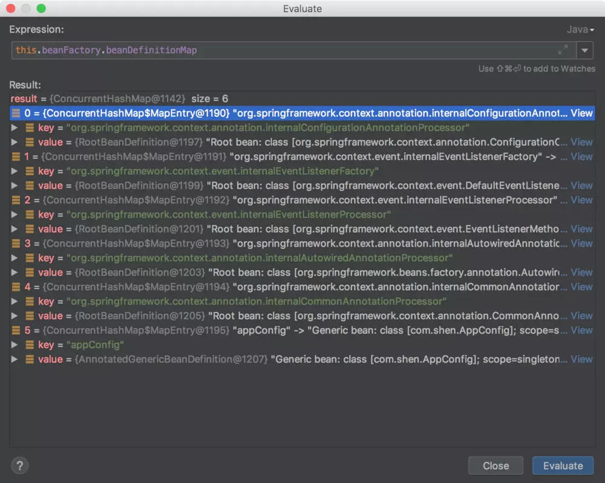

原文出处:本文由博客园博主Coder小黑提供。
原文连接:https://www.cnblogs.com/coderxiaohei/p/11631413.html
原文连接:https://www.cnblogs.com/coderxiaohei/p/11631413.html
接上回已经讲完了this()方法，现在来看register(annotatedClasses);方法。
// new AnnotationConfigApplicationContext(AppConfig.class); 源码
public AnnotationConfigApplicationContext(Class<?>... annotatedClasses) {
//调用默认无参构造器,里面有一大堆初始化逻辑
this();
//把传入的Class进行注册,Class既可以有@Configuration注解,也可以没有@Configuration注解
//怎么注册? 委托给了 org.springframework.context.annotation.AnnotatedBeanDefinitionReader.register 方法进行注册
// 传入Class 生成 BeanDefinition , 然后通过 注册到 BeanDefinitionRegistry
register(annotatedClasses);
//刷新容器上下文
refresh();
}register(annotatedClasses) 方法
register(annotatedClasses);方法最后其实是调用了reader的doRegisterBean(annotatedClass, null, null, null);方法。
<T> void doRegisterBean(Class<T> annotatedClass, @Nullable Supplier<T> instanceSupplier, @Nullable String name,
@Nullable Class<? extends Annotation>[] qualifiers, BeanDefinitionCustomizer... definitionCustomizers) {
//根据传入的Class对象生成 AnnotatedGenericBeanDefinition ,
// AnnotatedGenericBeanDefinition 是 BeanDefinition 的 一个实现类
AnnotatedGenericBeanDefinition abd = new AnnotatedGenericBeanDefinition(annotatedClass);
//根据 @Conditional 注解,判断是否需要跳过解析
if (this.conditionEvaluator.shouldSkip(abd.getMetadata())) {
return;
}
abd.setInstanceSupplier(instanceSupplier);
ScopeMetadata scopeMetadata = this.scopeMetadataResolver.resolveScopeMetadata(abd);
abd.setScope(scopeMetadata.getScopeName());
String beanName = (name != null ? name : this.beanNameGenerator.generateBeanName(abd, this.registry));
//解析 Class<T> annotatedClass 是否有通用注解: @Lazy，@Primary，@DependsOn，@Role，@Description
// 并把解决结果放入 AnnotatedBeanDefinition 中
AnnotationConfigUtils.processCommonDefinitionAnnotations(abd);
//Class<? extends Annotation>[] qualifiers 是通过方法调用传入的
// 上一步是解析Class中是否有注解,这一步是调用方作为参数传入的
if (qualifiers != null) {
for (Class<? extends Annotation> qualifier : qualifiers) {
if (Primary.class == qualifier) {
abd.setPrimary(true);
} else if (Lazy.class == qualifier) {
abd.setLazyInit(true);
} else {
//org.springframework.beans.factory.support.AbstractBeanDefinition.qualifiers
//Map<String, AutowireCandidateQualifier> qualifiers = new LinkedHashMap<>();
//直接放入map中
abd.addQualifier(new AutowireCandidateQualifier(qualifier));
}
}
}
for (BeanDefinitionCustomizer customizer : definitionCustomizers) {
customizer.customize(abd);
}
BeanDefinitionHolder definitionHolder = new BeanDefinitionHolder(abd, beanName);
definitionHolder = AnnotationConfigUtils.applyScopedProxyMode(scopeMetadata, definitionHolder, this.registry);
//将该Class<T> annotatedClass 转为 BeanDefinition 后, 通过再封装为 BeanDefinitionHolder 对象,进行 registerBeanDefinition
//AnnotatedBeanDefinitionReader 中有一个 BeanDefinitionRegistry registry 是通过构造方法传入的
//new AnnotationConfigApplicationContext(AppConfig.class); AnnotationConfigApplicationContext extends GenericApplicationContext
// GenericApplicationContext 类 实现了 BeanDefinitionRegistry ,registry 即为 AnnotationConfigApplicationContext
// GenericApplicationContext 类 内部 是 通过 DefaultListableBeanFactory 来实现 BeanDefinitionRegistry 接口的
BeanDefinitionReaderUtils.registerBeanDefinition(definitionHolder, this.registry);
}- 根据传入的
class对象创建AnnotatedGenericBeanDefinition，AnnotatedGenericBeanDefinition是BeanDefinition的一个实现类。 - 根据
@Conditional注解，判断是否需要跳过解析，很明显这里不需要，返回false，代码继续向下执行。 - 根据传入的参数，设置
BeanDefinition的属性 - 解析传入的
class对象是否有通用注解（@Lazy、@Primary、@DependsOn、@Role、@Description），并把解析结果放入AnnotatedBeanDefinition中。 - 判断是否有传入
Class<? extends Annotation>[] qualifiers参数，如果不为null，则将传入的qualifiers参数设置到BeanDefinition中。注意，第4步解析的是class中是否带有通用注解。而这步判断的注解是调用方手动传入的。 - 将传入的
class对象转化为BeanDefinition后，再将BeanDefinition封装到BeanDefinitionHolder中（为了方便传参），然后调用BeanDefinitionReaderUtils.registerBeanDefinition(definitionHolder, this.registry);注册该BeanDefinition。 - 调用
registerBeanDefinition方法时传入的this.registry对象是AnnotatedBeanDefinitionReader的一个属性，它是在构造方法中被初始化的。这个this.registry对象其实就是AnnotationConfigApplicationContext对象。AnnotationConfigApplicationContext继承了GenericApplicationContext，GenericApplicationContext类实现了BeanDefinitionRegistry接口。而在GenericApplicationContext类中其实是委托给成员变量beanFactory来实现BeanDefinitionRegistry接口的。
public class GenericApplicationContext extends AbstractApplicationContext implements BeanDefinitionRegistry {
private final DefaultListableBeanFactory beanFactory;- 再来看
registerBeanDefinition方法。主要是通过registry.registerBeanDefinition(beanName, definitionHolder.getBeanDefinition());方法将BeanDefinition注册到DefaultListableBeanFactory中，也就是spring容器中。
public static void registerBeanDefinition(
BeanDefinitionHolder definitionHolder, BeanDefinitionRegistry registry)
throws BeanDefinitionStoreException {
// Register bean definition under primary name.
String beanName = definitionHolder.getBeanName();
registry.registerBeanDefinition(beanName, definitionHolder.getBeanDefinition());
// Register aliases for bean name, if any.
String[] aliases = definitionHolder.getAliases();
if (aliases != null) {
for (String alias : aliases) {
registry.registerAlias(beanName, alias);
}
}
}而所谓的注册BeanDefinition，简单理解就是将BeanDefinition放到DefaultListableBeanFactory对象的beanDefinitionMap中。
//org.springframework.beans.factory.support.DefaultListableBeanFactory#registerBeanDefinition方法源码
public void registerBeanDefinition(String beanName, BeanDefinition beanDefinition)
throws BeanDefinitionStoreException {
Assert.hasText(beanName, "Bean name must not be empty");
Assert.notNull(beanDefinition, "BeanDefinition must not be null");
if (beanDefinition instanceof AbstractBeanDefinition) {
try {
((AbstractBeanDefinition) beanDefinition).validate();
} catch (BeanDefinitionValidationException ex) {
throw new BeanDefinitionStoreException(beanDefinition.getResourceDescription(), beanName,
"Validation of bean definition failed", ex);
}
}
BeanDefinition existingDefinition = this.beanDefinitionMap.get(beanName);
//第一次进来existingDefinition肯定为null
if (existingDefinition != null) {
if (!isAllowBeanDefinitionOverriding()) {
throw new BeanDefinitionOverrideException(beanName, beanDefinition, existingDefinition);
} else if (existingDefinition.getRole() < beanDefinition.getRole()) {
// e.g. was ROLE_APPLICATION, now overriding with ROLE_SUPPORT or ROLE_INFRASTRUCTURE
if (logger.isInfoEnabled()) {
logger.info("Overriding user-defined bean definition for bean '" + beanName +
"' with a framework-generated bean definition: replacing [" +
existingDefinition + "] with [" + beanDefinition + "]");
}
} else if (!beanDefinition.equals(existingDefinition)) {
if (logger.isDebugEnabled()) {
logger.debug("Overriding bean definition for bean '" + beanName +
"' with a different definition: replacing [" + existingDefinition +
"] with [" + beanDefinition + "]");
}
} else {
if (logger.isTraceEnabled()) {
logger.trace("Overriding bean definition for bean '" + beanName +
"' with an equivalent definition: replacing [" + existingDefinition +
"] with [" + beanDefinition + "]");
}
}
this.beanDefinitionMap.put(beanName, beanDefinition);
} else {
if (hasBeanCreationStarted()) {
// Cannot modify startup-time collection elements anymore (for stable iteration)
synchronized (this.beanDefinitionMap) {
this.beanDefinitionMap.put(beanName, beanDefinition);
List<String> updatedDefinitions = new ArrayList<>(this.beanDefinitionNames.size() + 1);
updatedDefinitions.addAll(this.beanDefinitionNames);
updatedDefinitions.add(beanName);
this.beanDefinitionNames = updatedDefinitions;
removeManualSingletonName(beanName);
}
} else {
// Still in startup registration phase
this.beanDefinitionMap.put(beanName, beanDefinition);
this.beanDefinitionNames.add(beanName);
removeManualSingletonName(beanName);
}
this.frozenBeanDefinitionNames = null;
}
if (existingDefinition != null || containsSingleton(beanName)) {
resetBeanDefinition(beanName);
}
}运行完register(annotatedClasses);方法之后，spring容器中还没有实例化bean，而只是注册了一些BeanDefinition。（注册的是Spring内部一些postProcessor和我们代码传入的AppConfig类）。

源码学习笔记GITHUB仓库地址：https://github.com/shenjianeng/spring-code-study
欢迎各位关注公众号：